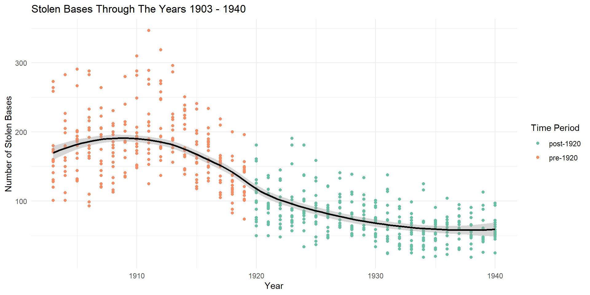
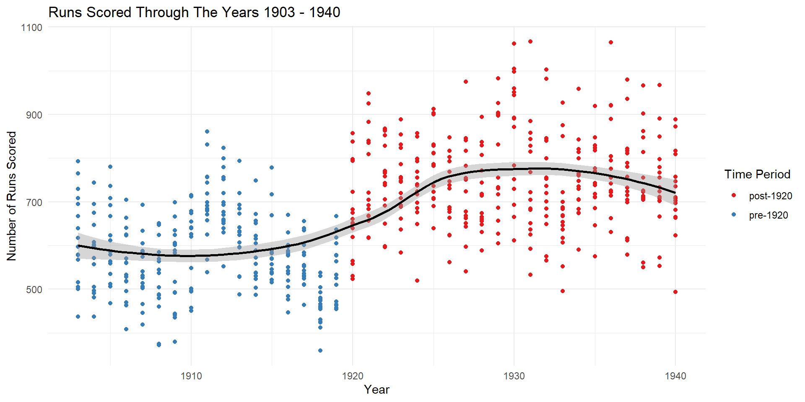
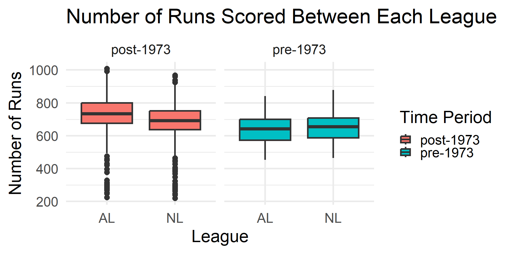
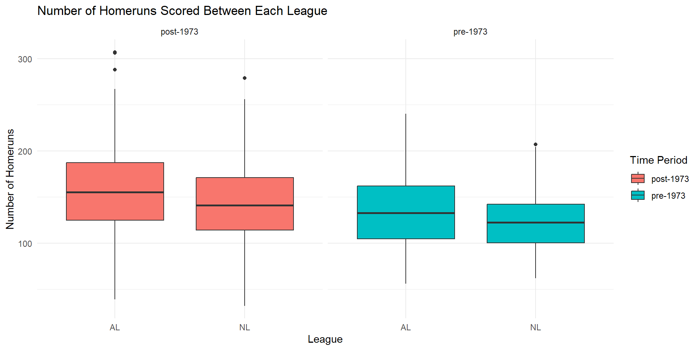
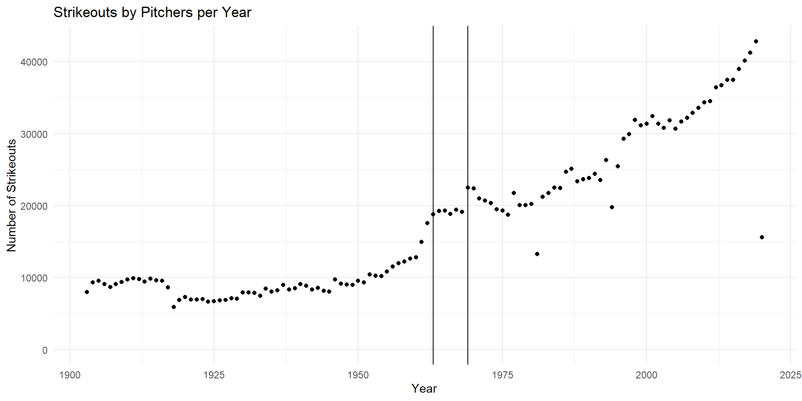

The mlb_teams dataset used it from openintro linked here: https://www.openintro.org/data/index.php?data=mlb_teams) - looks at every professional team that exists or has existed from 1876 to 2020 with various numerical and categorical variables on each team’s performance.
I sliced the dataset to only include world series years (1903-2020) and selected variables of interest: year, league_id, runs_scored, homeruns, stolen_bases and strikeouts_by_pitchers.
How did some of the biggest rule changes in the history of baseball affect the game:
Abolition of spitball led to a decrease in stolen bases and a increases in runs scored per year


Introduction of a Designated Hitter led to the AL league to have more runs scored and home runs than the NL


Strike zone change in 1963 to favor pitchers by that led to “Year of the Pitcher” 1968-1969 so it change again in 1969 with the mound reducing form 15 inches to 10 inches to help batters more
